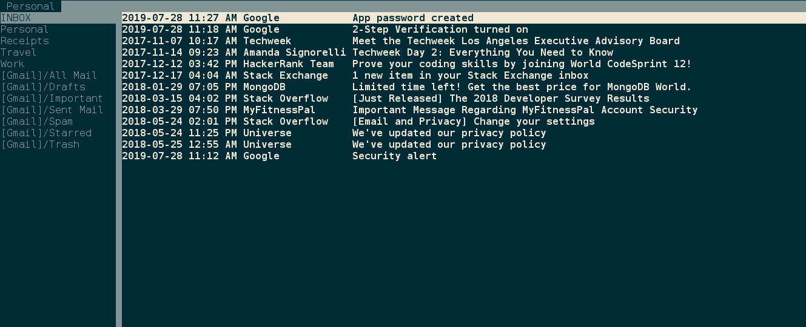

Text-Based Email

1. What is this page?
A step by step guide for setting up Gmail with a text-based email client called aerc.
2. Install
I didn't tested it but this guide should works on Mac and Windows as well.
cd ~/
git clone https://git.sr.ht/~sircmpwn/aerc
cd aerc
make
sudo make install3. Configure
Run aerc
Running it for the first time will ask you a bunch of questions. Answer the following:
(tab and shift tab to move around, enter to pick option)
- Name for this account: Personal
- Full name for outgoing emails: John Doe
- Your email address: jonhdoe@gmail.com
Configure incoming mail (IMAP)
- Username: jonhdoe@gmail.com
- Password: secretpassword
- Server address: imap.gmail.com:993
- Connection mode: IMAP with STARTTLS
Configure outgoing mail (SMTP)
- Username: jonhdoe@gmail.com
- Password: (skip this)
- Connection mode: Insecure SMTP
- Copy sent messages to 'Sent' folder: No
There is one more thing you should do in order to make it work - you need to get a special password for this app from Google. After you get it, you should replace it in the configuration file ~/.config/aerc/accounts.conf
Follow the steps on this Googles page to generate that password. Google calls it App Password.
4. Run
Run aerc again
5. Basic Commands
- Move between emails: j/k
- Move between folders: shift j/k
- View email: enter
- Go up and down when reading an email: j/k, Page up/down, arrows, g/GG
- Back to email list: q
- Delete email: :delete
- Compose email: C
- Send email: :q
- Reply: Rr
- Reply All: rr
6. HTML Email
HTML emails will show the html tags. To make things pretty use w3m browser. Do that by adding this line in aerc.conf: text/html=/usr/bin/w3m -T text/html -o display_link_number=1. Add it above this line: text/*=awk -f /usr/local/share/aerc/filters/plaintext.
Now whenever you open an HTML email, you won't see the html tags. Instead it will be rendered using w3m.
7. Don't break lines
Vim automaticaly wrap lines after 80 characters. This will cause the lines in your emails to be broken. Here is how to fix it.
mkdir -p .config/nvim/after/ftplugin
vim .config/nvim/after/ftplugin/mail.vimAdd this line to mail.vim: set formatoptions-=t
8. Google Contacts
How to find your contacts without opening the browser? Goobook.
9. Get Help
- Help Pages:
man aerc,man aerc-tutorial, andman aerc-config - Search for ticket or submit new one
- Chat